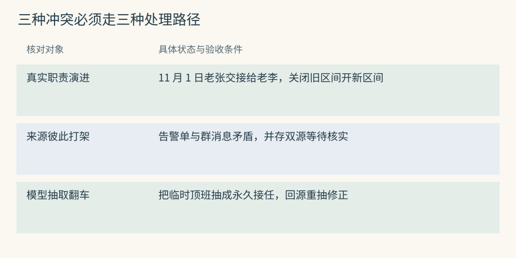
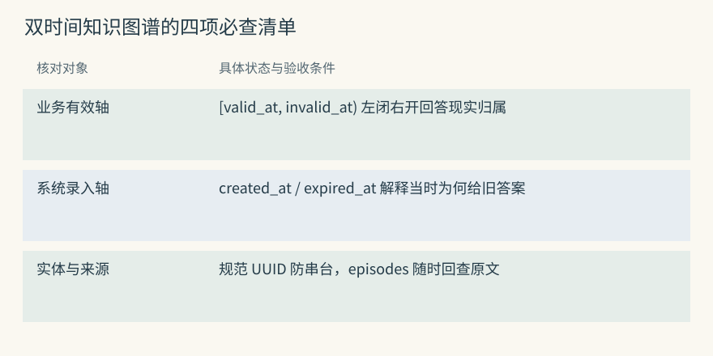

时间、冲突与知识图谱
两句完全相反的话，其实都曾经是真的
研发团队里人员交接是家常便饭：
- 10 月 3 日起，
payment-gateway的 on-call 与发布终审由老张负责； - 11 月 1 日起，职责正式交接给老李；
- 但因为交接表忘填，系统直到 11 月 4 日才收到这条交接通知。
现在团队里有两个人来问研发助手：
- 问一（今天查现行规则）：“今天发版找谁终审？” → 老李。
- 问二（审计历史事故）：“10 月 20 日那次发布为什么找老张签字？” → 因为 10 月 20 日那天现实中就是老张负责！
如果你把“老张”直接 UPDATE 覆写成“老李”，审计历史就毁了；如果你把两条记录都留在库里却不带有效区间，模型每次都会同时看到“老张负责”和“老李负责”，只能抓阄。
最干净的表达是左闭右开有效区间 [valid_at, invalid_at)：
- 老张：
[2026-10-03, 2026-11-01) - 老李：
[2026-11-01, null)（null代表“尚未记录结束”，不是“永久不变”）
用左闭右开的好处立竿见影：在 11 月 1 日零点交接那一瞬间，查询只精确落在新关系（老李）上，既不会两个人都生效，也不会出现一秒钟的真空期。
为什么一根时间轴不够用：拆开“现实有效时间”和“系统获知时间”
刚才那个“11 月 1 日交接、11 月 4 日才录入”的晚到通知，直接把单时间轴打穿了。看下面两个关于 11 月 2 日的追问：
- “11 月 2 日那天，现实中到底该找谁当 on-call？”
答案是老李——这问的是业务有效时间（Valid Time：
[valid_at, invalid_at)）。 - “既然 11 月 2 日已经是老李了，为什么那天凌晨告警时，研发助手把告警派给了老张？”
因为 11 月 2 日那天，4 日的通知还没录入系统，当时系统手里掌握的合法资料就是老张！这问的是系统录入时间（Transaction / Ingestion Time：
created_at/expired_at），必要时还要配合当时请求实际注入的快照来佐证。
源码核验：Mem0 与 Graphiti 怎么处理双时间（选读）
Graphiti：四组时间字段 + SearchFilters 显式过滤
Graphiti 的 EntityEdge 原生带 valid_at、invalid_at（业务有效轴）和 created_at、expired_at（系统时间轴），Episode 则带 reference_time 作为解析“上周”“1 号起”的锚点。注意：表里有字段不代表默认 search() 会自动帮你筛成严格当前视图，查询特定日期时要显式传 SearchFilters：
from datetime import datetime, timedelta, timezone
from graphiti_core.search.search_filters import ComparisonOperator, DateFilter, SearchFilters
tz = timezone(timedelta(hours=8))
target = datetime(2026, 11, 2, tzinfo=tz)
filters_at_day = SearchFilters(
valid_at=[[DateFilter(date=target, comparison_operator=ComparisonOperator.less_than_equal)]],
invalid_at=[
[DateFilter(comparison_operator=ComparisonOperator.is_null)],
[DateFilter(date=target, comparison_operator=ComparisonOperator.greater_than)],
],
)同一字段的外层列表是 OR、内层是 AND，合起来就是标准的 valid_at <= target AND (invalid_at IS NULL OR invalid_at > target)。
另外在 2026-11 同步的 Graphiti v0.31.2+（graphiti.py）中，Graphiti 正式引入了 SagaNode 及其叙事总结能力，可以把围绕同一次故障或长程发版的连续多段 Episode 串成一条主线；同时参考 MCP 和 REST 服务默认收紧为仅监听 localhost，减少误暴露内网图库的隐患。
Mem0：开源版 created_at 与 expiration_date 都不是双时间
Mem0 的 created_at / updated_at 只是系统写入/修改时间，expiration_date 只是控制卡片到期后不在默认搜索里展示（类似有效期隐藏），开源本地快照也不支持直接传顶层 timestamp 或 search(reference_date=...) 做双时间查询。如果业务要支持“晚到通知”的历史回溯，必须在业务外层自己维护 valid_from / valid_to 版本表。
别把所有“冲突”都一刀切覆盖：三种冲突走三条路
看到新旧两条信息对不上，最偷懒也最危险的做法就是“后写入的直接覆盖先写入的”。其实“冲突”分三种截然不同的情况：
- 真实状态演进：11 月 1 日老张正式把 on-call 交接给老李 → 关闭旧有效区间（填
invalid_at），开启新区间，历史完整保留。 - 来源彼此打架：排班系统写着本周是老李，但运维群公告写着还是老张 → 绝不能按谁晚入库就判谁对！ 必须同时保留两份证据和出处，提示人去核实。
- 抽取或录入错误：原话明明说“老李本周五临时顶班”，模型抽成了“老李永久接任” → 这不是状态演进，必须回到原事件重抽并撤回错误的派生记录。
还有一种假冲突要重点提防：单次例外与不同职责不是冲突。
- “本周五紧急 hotfix 找老张”和“11 月起常规发布找老李”完全兼容，前者绑定本次任务，绝不能把后者的长期规则关掉；
- “老李负责
payment-gateway的应用发布”和“老王负责payment-gateway的数据库变更”职责不同，更不能因为都叫“负责人”就互相顶掉！
源码与边界：警惕“纯靠相似度猜冲突”（选读）

Graphiti：先语义判矛盾，再做时间窗口运算
Graphiti 的 resolve_extracted_edge() 先由模型判断是否重复或矛盾，再由 resolve_edge_contradictions() 按区间重叠关系把旧边的 invalid_at 设为新边的 valid_at、把 expired_at 记为当前处理时间。时间算术本身很严谨，但前提是上一步模型没有把“临时顶班”误判为“永久矛盾”。
MCP Memory Service：可选的相似度矛盾启发式要慎用
翻看 contradictions.py，它的可选矛盾检测默认关闭，开启后会挑出向量相似度落在 0.4 ~ 0.75 之间的近邻，按创建时间把旧的标成 superseded_by。这种纯靠相似度区间 + 时间先后猜矛盾的启发式非常容易误伤——“老李管应用发布”和“老王管数据库变更”的相似度很可能刚好落在 0.55！开启前一定要先预览并配好反例测试。
实体消歧（Entity Resolution）：端点合错了，时间再准也全线串台
双时间图谱里另一个隐形杀手是实体消歧，它同时面临两个方向的坑：
- 过度合并（同名不同物）：公司里核心支付组有个
billing-api，企业大客户组也有个billing-api。如果实体解析光看名字相同就把它们合并成一个节点 UUID，核心支付组的 on-call 交接立刻就会串台到大客户组！ - 过度拆分（同物不同名）：一份文档写
payment-gateway，另一份口语写“支付网关”。如果拆成两个毫无关系的节点，交接通知挂在“支付网关”上，发版查payment-gateway时就根本查不到更新。
所以做实体解析时，一定要把作用域（团队/仓库）、唯一标识（服务 ID/代码仓路径）和上下文一起塞给解析器，验收时直接核对最终的规范 UUID，不要只盯着界面上显示的名字看。
什么时候根本不该上知识图谱？
知识图谱听着高级，但它的工程账单实打实摆在那里：每写一条消息都要多跑几次 LLM 结构化抽取、做实体消歧、维护图数据库和索引，而且一旦发生同名误合并，拆节点 + 重建摘要的善后成本极高。
先别迷信图谱，按这三条标准做决定：
- 如果你的研发助手 90% 的查询都是“搜单条发布规程、读个人偏好”，老老实实用“受限混合检索 + 外层版本字段”更稳更便宜；
- 只有当你真的面临两类纯检索搞不定的高频痛点——① 跨文档两跳/多跳关联（文档 A 写服务归属团队，文档 B 写团队审批人，两份文档字面不重合），或者 ② 严格的双时间历史追踪——再引入图谱（Graphiti / Cognee / HippoRAG）；
- 引入前，先拿纯检索跑挂的那批真实失败题建基线，固定相同的 Token 预算和回答模型，证明图谱带来的净收益盖得住建图费用和纠错成本。
实现笔记：图谱的三种不同用途与双时间核验清单（选读）
市面上同样打着“图谱记忆”旗号的项目，底层解决的根本不是同一个问题：
- Graphiti（双时间事实图）：重点在“规范实体 + 双时间事实边 + 来源回溯”，适合解决“什么时间、谁管什么、历史怎么变”。最新
2026-11版本还强化了SagaNode叙事串联以及remove_episode()删除后的共享边保护与存活节点摘要重算。 - HippoRAG（联想传播图）：用 OpenIE 从文档抽三元组连成短语-段落图，再用 Personalized PageRank（PPR）把查询种子扩散到没出现查询字面的多跳段落。它主攻“跨文档关联到达”，并不原生维护双时间有效区间或用户权限。
- Cognee（异构 Schema 管线图）：按自定义 Pydantic Schema 把文档、代码、会话塞进关系+图+向量多存储里。同样，它不是开箱即用的双时间冲突裁决器。
- Basic / A-MEM / TencentDB CodeGraph：Basic 的边是人写的 Markdown 链接，A-MEM 的边是模型建议的笔记关联，CodeGraph 的边是代码符号调用关系——同样画成点和线，语义完全不能互换。
如果你决定给研发助手上时间与关系能力，上线前至少拿这 6 道必考题跑一遍回归：
- 交接前查询（10 月 20 日 → 老张）；
- 交接瞬间查询（11 月 1 日 00:00 → 仅老李，无双值）；
- 晚到通知后的现实回溯（11 月 4 日补录后问 11 月 2 日现实职责 → 老李）；
- 晚到通知前的系统知识审计（11 月 2 日助手为何找老张 → 依赖当时版本或请求快照）；
- 单次例外隔离（周五 hotfix 找老张，不关闭老李长期职责）；
- 同名隔离 + 别名打通（两个
billing-api不合并，payment-gateway与“支付网关”合并）。
动手检查
11 月 4 日系统收到一条综合通知：“11 月 1 日起 payment-gateway 的夜间 on-call 改由老李负责，本周五紧急 hotfix 仍找老张，白天值班安排不变。”
- 请列出这三条信息各自的适用范围、生效日与系统获知日；
- 事后追问“11 月 2 日夜间现实该找谁”与“11 月 2 日凌晨助手当时知道该找谁”，分别要查什么证据？
答案提示：夜间 on-call 变更生效日为 11 月 1 日、获知日为 11 月 4 日，且仅限夜间职责，绝不能顺手改掉白天值班；周五 hotfix 仅绑定本次任务，不能关闭老李的长期区间。问 11 月 2 日现实归属查有效时间轴（答案：老李）；问助手当时为何派给老张，必须查系统时间轴上 11 月 2 日已录入的版本（以及当次调用的实际 Prompt 快照）。

项目对照速查（选读）
本章对照结论
| 项目 | 时间与图关联的核心机制 | 落地时最该验证的短板 |
|---|---|---|
| Graphiti | 双时间边（valid_at/invalid_at + created_at/expired_at）、实体消歧、SagaNode |
显式 SearchFilters 过滤、同名误合并与基础搜索不自动多跳 |
| Hippo Memory | 显式 supersede + 带 asOf 的多跳图召回 |
衰减强度不能替代事实真伪裁决 |
| MCP Memory Service | as_of 历史过滤 + 可选相似度矛盾启发式 |
纯相似度猜冲突容易误伤相关但不矛盾的规则 |
| TencentDB | L1 冲突判别 + Wiki 链接 / CodeGraph 符号图 | 代码调用关系不是业务审批关系，L1~L3 并非原生双时间边 |
| Mem0 | created_at/updated_at、expiration_date、实体索引 |
开源版无原生双时间区间，需业务外层维护版本与生效日 |
| Memobase | 合并当前用户画像 + 事件时间线 | 历史旧值与原聊天 blob 的保留策略 |
| Cognee | 自定义 Schema 图谱与来源块 | 需按具体管线核对时间语义与跨存储恢复 |
| HippoRAG | OpenIE 短语-段落图 + PPR 传播 | 擅长多跳到达，不负责双时间历史版本裁决 |
| Basic Memory / Letta Code | 显式链接 / Git 修订历史 | Git commit 时间是编辑时间，不是业务生效时间 |
| A-MEM / MemoryOS / MemOS | 邻居链接演化 / 主题页 / 多形态容器 | 不原生提供可按任意业务日期回溯的双时间关系边 |
| Agent Beacon / Hermes Jev | 动作事件时间线 / 日期锚点判别 | 只提供事件素材或单次判别，不维护长期历史图 |